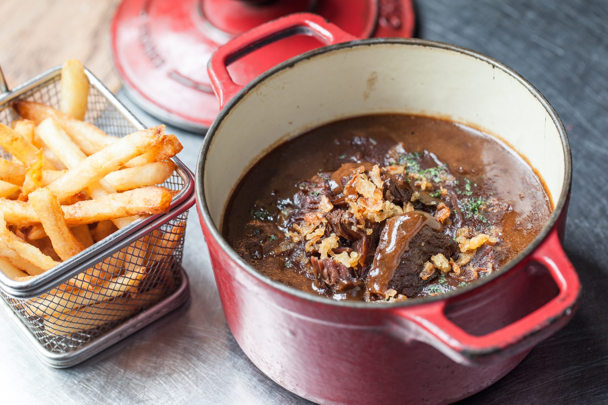

Belgian "Stoofvlees"

A classic Belgian ale casserole with chunks of meaty beef
This sweet and sour steak and ale stew (stoofvlees or stoverij) has many variations, and many families hand down their own recipes from generation to generation. Most recipes include beef, rich dark beer, bread, onions, salt, pepper, herbs (such as bay and thyme), and spices. Other ingredients can include carrots, mushrooms, bacon, red wine, shallots and even dark chocolate! A long marinade and slow cooking are crucial to the flavor and tenderness of the meat. Traditionally, people enjoy this dish with frites (French fries), boiled potatoes, noodles, salad or veggies and of course, more beer.
Ingredients
- 1.25 kg stewing beef, cut into 4cm cubes
- 400ml Trappist ale such as Leffe or Chimay, or other dark ale
- 3 garlic cloves, lightly crushed
- 2 bay leaves
- 3 tbsp plain flour
- 2-3 tbsp olive oil
- 250g diced pancetta
- 2 carrots, sliced
- 2 onions, sliced
- 1 leek, sliced
- 1 tbsp tomato puree
- 350ml beef stock
- 1 bouquet garni
- a handful op parsley, chopped
Steps
- Marinate the beef overnight in the ale with the garlic and bay leaves. The next day, drain the beef from the marinade, reserving the marinade. Pat the meat dry with kitchen paper and toss it in the seasoned flour until evenly coated. Shake off any excess flour.
- Heat 2 tbsp of the olive oil in a large flameproof casserole until hot. Fry the beef in 3-4 batches for about 5 minutes per batch, stirring occasionally, until it is a rich golden brown all over. You may need to add a little more oil between batches but make sure it is hot again before adding the next batch. Remove the meat with a slotted spoon to a plate and set aside. Don’t worry if the bottom of the casserole is starting to brown, this all adds to the flavour of the finished dish.
- Lower the heat to medium and fry the pancetta in the casserole for 6-8 minutes, stirring occasionally, until crisp and golden. Scoop the pancetta out with a slotted spoon and set aside with the beef.
- Preheat the oven to fan 140C/conventional 160C/gas 3. Tip the carrots, onions and leek into the casserole and fry, stirring occasionally, until they start to brown – this takes about 12 minutes. Spoon in the tomato purée and continue to cook for 2 minutes, stirring constantly.
- Add the beef and pour in the reserved marinade. Bring to a simmer, scraping any sticky bits off the bottom of the pan, then add all the beef stock and bouquet garni to the casserole. Season with salt and pepper and bring everything to the boil. Remove from the heat. Cover with a lid and cook in the oven for 2 hours, stirring once halfway through. (The carbonnade may now be left to cool and frozen for up to 1 month. Add 100ml/31⁄2 fl oz more stock to the sauce when reheating.) When the beef is ready, taste for seasoning and add more salt and pepper if you think it needs it. Scatter the chopped parsley over the top and serve straight from the casserole, with creamy mash or jacket potatoes and buttered greens or cabbage.